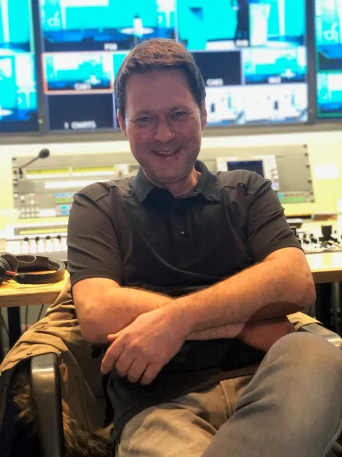
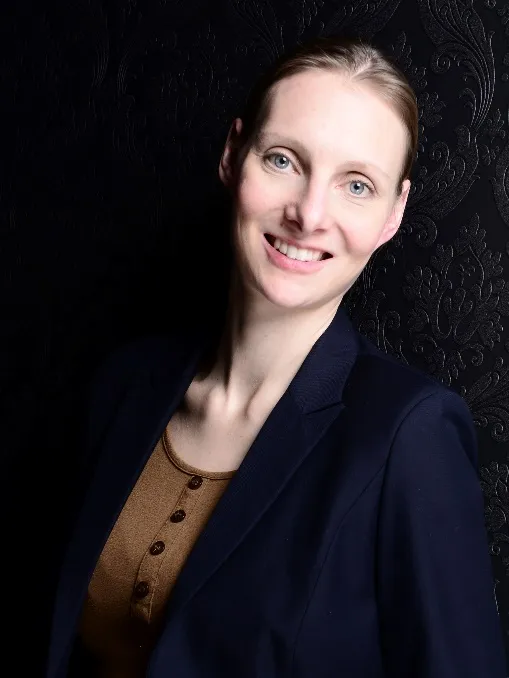
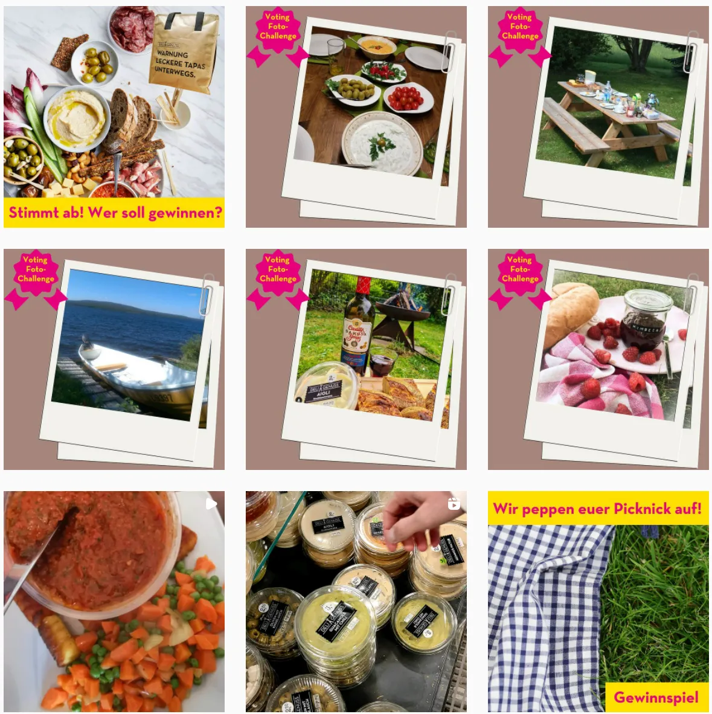
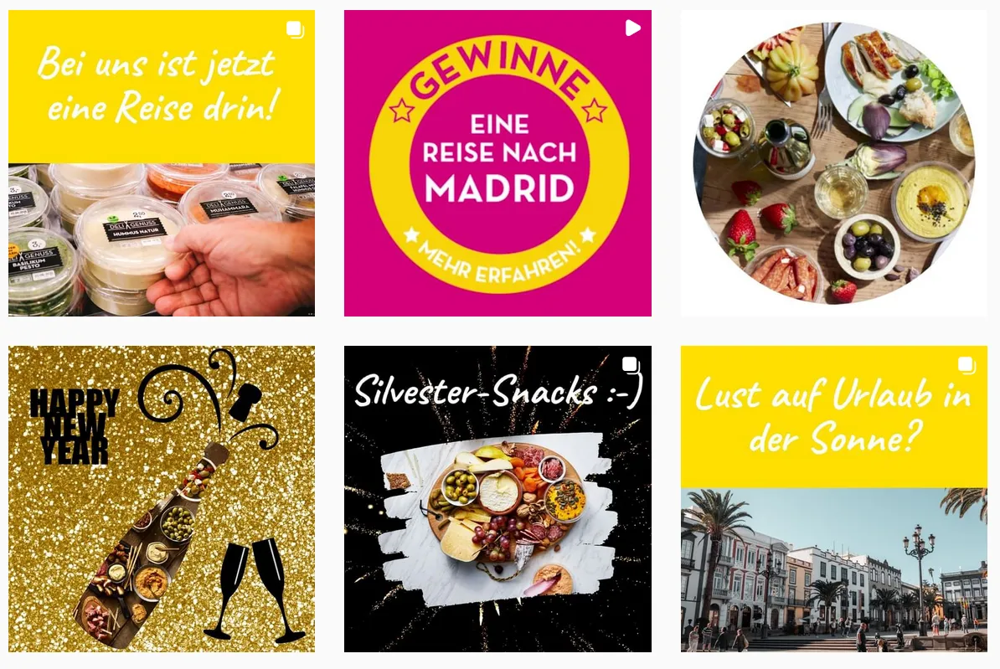

Frank Linke
Kamera, Schnitt, Messe-Berichterstattung
- Mediengestalter, Kameramann, Videoeditor
- Hat die Messeberichterstattung für die Messe Düsseldorf etabliert
- Kongress-Know-how, HD/3D/4K, 360°
Pitch für die Messe Düsseldorf
Video, Foto, Text und Blog für Website und Social Media – von Menschen, die die Messe Düsseldorf kennen.
Weiter mit → oder Klick
Station 1 · Unser Know-how
HD, 4K, 3D, 360°. Hochformat 9:16 und quadratisch 1:1.
Messe-Reportage, Porträts und Testimonials.
Interviews, Newsmeldungen, Messe-CMS. Deutsch und Englisch.
Branchenstorys, die Besucher und Aussteller gern lesen.
Station 2 · Ihr Team

Kamera, Schnitt, Messe-Berichterstattung

Moderation, Redaktion, Englisch

Strategie, Social Media, KPIs

Moderation, PR-Redaktion, Messe-CMS
Station 3 · Team-Support
Bei großen Produktionen verstärken uns Kamera-, Schnitt- und Social-Media-Crews, die für Sender und Unternehmen arbeiten.
Station 4 · Sie sind dran
Station 5 · Tempo & Qualität
Interviews in 3 Messetagen als Video und Foto-Text/Testimonial
Social-Media-Clips zusätzlich in derselben Zeit
Korrekturschleifen, optisch und inhaltlich, in beiden Sprachen
Flexibel statt starr: Wir reagieren auf Social-Media-Reaktionen und Änderungen im Messe-CMS ohne feste Arbeitszeiten.
Station 6 · Ganzjährige Betreuung
Der Messekalender der Messe Düsseldorf liefert den Takt (Quelle: messe-duesseldorf.de, Stand November 2026):
Station 7 · Beispiele unserer Arbeit
Station 8 · Wirkung messbar machen
18.11.–15.02. 16.02.–15.05.2022 · Beispielkunde Deli Genuss, rein organisch, ohne bezahlte Anzeigen.
Station 9 · Organischer Content






Station 10 · Noch eine Frage
Station 11 · Ihre Vorteile
Festes Team, das die Messe kennt: weniger Aufwand.
Professionelle Umsetzung auch kurzfristig.
Website, Newsletter und Social Media aus einer Hand.
Planung, Erstellung, Archiv, Wiederverwertung, Auswertung.
Weniger Mehrfachproduktion, mehr Reichweite pro Inhalt.
Deutsch und Englisch, sprachlich und inhaltlich geprüft.
Hohe Identifikation mit der Messe Düsseldorf.
Wir entwickeln Formate gemeinsam weiter.
Konstante Community-Betreuung stärkt das Image.
Next Step
Lassen Sie uns gemeinsam planen, wie die nächsten Messen erzählt werden.
© Frank Linke, Gesa Gröning, Emily Whigham, Johannes Röder